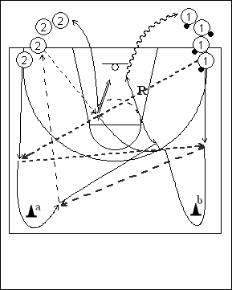

Catégorie : ECHAUFFEMENT (Ech-011)
Déroulement
- Deux files de joueurs aux extrémités d’une baseline. Les ballons sont dans la file 1.
- Le premier joueur de la file 1 passe au premier joueur de la file 2 et reçoit le ballon en retour. Le premier joueur de la file 2 contourne le cône a et reçoit à nouveau le ballon du premier joueur de la file 1. Le premier joueur de la file 2 passe au deuxième joueur de cette file et place un screen away pour le premier 1 qui est passé derrière le cône b. Le premier joueur de la file 1 profite de cet écran et reçoit le ballon du deuxième joueur de la file 2 pour un lay-up ou un jump shoot.
- Le poseur d’écran fait le rebond et va dans la file 1, tandis que 1 va en 2 après son shoot. Les deux joueurs suivants peuvent maintenant démarrer.
Coaching points
- Travailler les mouvements simplement mais correctement au début, puis accélérer le rythme du drill.
- Travailler des deux côtés.